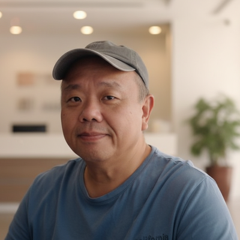
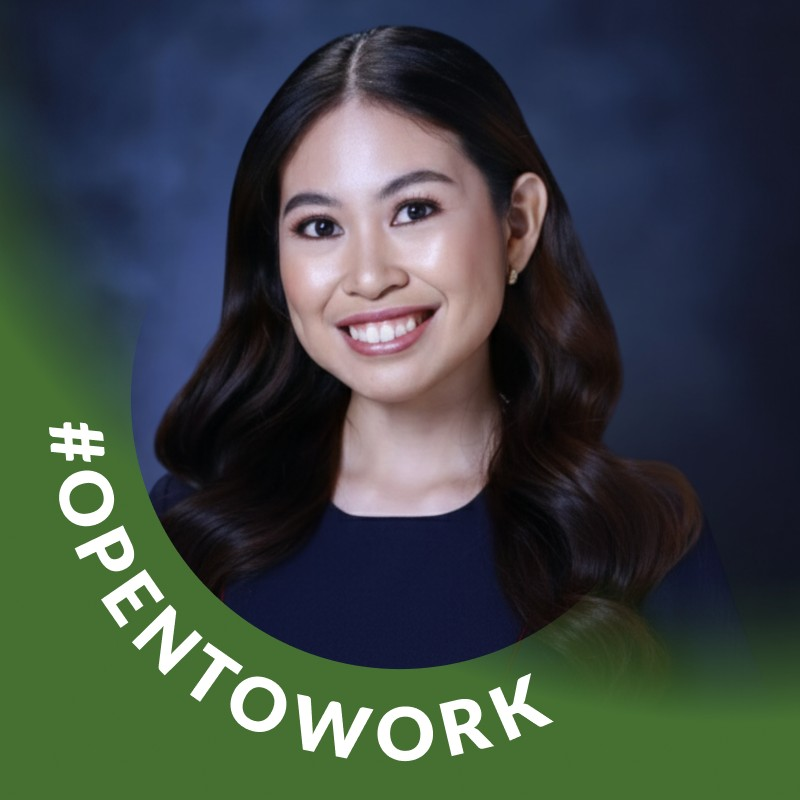
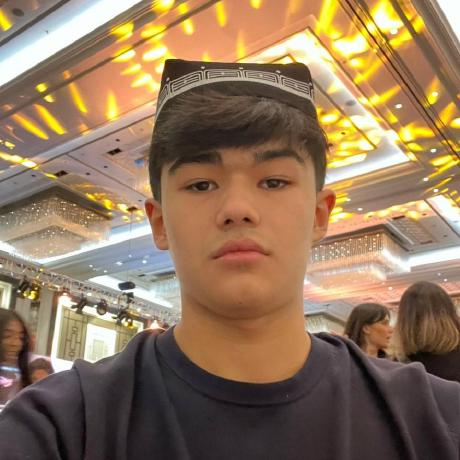
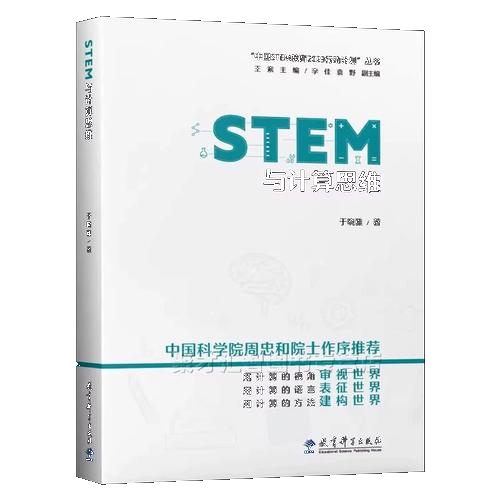

Empowering the next generation of Pythonistas. Join educators, learners, and enthusiasts as we explore the future of Python education.
Monday 22 June 2026
0900 to 1700
Singapore University of Technology and Design (SUTD)
This is an invite-only event
Sign Up for Education Summit| Item | Presenter |
|---|---|
| Welcome & Roundtable Introduction | All |
|
Python Software Foundation Education & Outreach Work Group
The Python Software Foundation (PSF) Education & Outreach Workgroup's (EOW) purpose is to support the Python Software Foundation's mission to promote the Python programming language, especially in supporting and enhancing the education of Python.
The EOW's goals include:
|
Cheuk Ting Ho
LinkedIn
Open source developer and advocate. Python Software Foundation fellow and director. Diversity and inclusion activist.
About: After having a career as a Data Scientist and Developer Advocate, Cheuk dedicated her work to the open-source community. Currently, she is working as AI developer advocate for JetBrains. She has co-founded Humble Data, a beginner Python workshop that has been happening around the world. She has served the EuroPython Society board for two years and is now a fellow and director of the Python Software Foundation (PSF). She is also the PSF Education & Outreach Work Group Lead.
More at https://cheuk.dev/about/
|
|
The Hidden Data in Everyday Work
Data storytelling does not always begin with clean spreadsheets or polished dashboards. Sometimes, it starts with a messy room after an event, repeated handover issues, or small observations that frontline workers notice every day.
In this talk, I share my experience exploring how Python and AI can turn everyday observations into simple data stories. Through a facilities management scenario, I reflect on how observation, categorisation, visualisation, and narrative can help reveal patterns that are often hidden in routine work.
The talk is less about building a perfect app, and more about using Python and AI as thinking tools, helping us ask better questions, make sense of messy real-world situations, and communicate insights in a more human way.
|
 William Hooi
LinkedIn
Forward-Deployed AI Educator and Builder
About: William helps learners and organizations turn messy real-world problems into practical digital and AI-enabled solutions. With 25 years of experience across education, training, operations, and business transformation, he works as a freelance software developer, trainer, and former educator, combining software development, AI solution design, and hands-on facilitation to turn early ideas into usable products, workflows, and prototypes.
|
|
Why Python Matters in Basic Education: Building Thinkers, Not Just Coders.
Across the past decade, education research has shifted from teaching code through strict syntax to building broad problem-solving skills. Python fits this shift well because it is clear, flexible, and beginner friendly. This session highlights global trends in computational thinking and explains why Python works as a foundation for K to 12 learners. It helps students focus on logic, structure, and creative problem solving, which strengthens digital literacy and prepares them for a tech-driven future.
|
 Rodelene Joy Leonorio
LinkedIn
High school computing teacher & Postgraduate student at De La Salle University, The Philippines.
About: Teacher Joy is a high school computing teacher currently pursuing her postgraduate studies at De La Salle University, The Philippines. She recently spoke at Python Asia 2026 and is continuing this important discussion to promote greater awareness of computing education for young learners.
|
|
International Collegiate Artificial Intelligence Contest
A new global programme for AI talent development and education outreach. Launching 2026. :)
|
Prof Tan Sun Teck
LinkedIn
Assoc Professor at NUS School of Computing | President, International Olympiad in Informatics
About: After starting Centre for Nurturing Computing Excellence (CENCE) for Singapore, Prof Tan went on to inaugurate the International Cybersecurity Olympiad (ICO). His latest venture is the equivalent of ACM International Competitive Programming Contest (ICPC) but for AI.
|
|
My Python Learning Journey: From Beginner to Builder
Discover the challenges, triumphs, and key takeaways from a personal journey into the world of Python programming. A session filled with actionable insights for learners and educators alike.
|
 Yusufbek Abdurakhimov
LinkedIn
High school student. Reigning NOI Uzbekistan Champion and also its National Team Captain in AI & Cybersecurity. Founder of Neuro League.
About: At 17, Yusufbek is building AI platforms, global olympiads, and educational systems that connect innovation with real-world impact. His journey is driven by curiosity, discipline, and the ambition to redefine what is possible.
|
|
Learning to learn: a self-directed approach to programming
Most programming education follows a set curriculum. I took a different route and mostly figured things out on my own. I'll talk about how C gave me a foundation in low-level thinking, how Rust helped me take that further with modern tooling and concepts, why I use Emacs and AI tools instead of just going with whatever's popular, and where Python fits in when I need to get things done quickly. The talk is really about how to learn when there's no syllabus telling you what comes next.
|
Yiyuan Li
LinkedIn
Middle-school dropout. 42 student.
About: Yiyuan is your non-typical middle-school dropout high-agency self-learner currently excelling at the gruelling 42 programme at SUTD. He treats computer science as a discipline, not just a career path.
|
| 🍱 Lunch & Networking 🤝 | |
Lightning Talks
|
|
|
CodeHinter: AI-based Tool for Helping Novice Programmer Debug Errors
In this talk, we will share a AI-based tool designed for novice programmers to debug their computer code. We will present the design of the tool with its full integration in Visual Studio code. Instead of shortcutting learners thinking, the tools helps learners to to think and fix logical errors in their code. The tool promotes productive struggles in learners which is crucial in the age of AI.
|
Dr Oka Kurniawan
Senior Lecturer & Director (Education) - Office of AI and Digital Innovation at Singapore University of Technology and Design
|
|
Building an AI Agent for your Computing subject
Learn how to go beyond ChatGPT/Claude/Gemini to harness the potential and power of autonomous AI agents to create and automate tasks related to the teaching and learning of Computing. We will be using Hermes Agent (https://hermes-agent.nousresearch.com) with Telegram gateway. (If time allows, we may cover Discord).
|
ComputingSG |
What I Learned from my recent International Bebras Workshop in Cambridge, UK.
|
ComputingSG |
Computing Subject Resources
|
ComputingSG |
|
Challenging your students with the next date problem
In this lightning talk, we will show how writing a Python program to give the next date from today's date can be used to challenge Python learners to think more deeply about a problem.
|
Dr Norman Lee
Senior Lecturer at Singapore University of Technology and Design
|
|
STEM and Computational Thinking (A book translation and adaptation effort)
In-person attendees get early access by request.
 Chapter 1 Computational Thinking: Fundamental Problem-Solving Ability in the Intelligent Era
Chapter 2 From Technical Implementation to Competency Development: STEM Project Design for Computational Thinking Education
Chapter 3 Thinking and Learning with Computational Thinking: New Approaches to STEM Problem Solving
Chapter 4 Practical Application and Innovation: STEM-Based Computational Thinking Project Learning
|
With Prof Yu Xiaoya
Beijing Academy of Education. Master's Supervisor at Minzu University of China. Distinguished Teacher of Higher Education in Beijing.
|
| CT Finale |
Prof Leong Hon Wai
ex-NUS. Always CT Motivational Speaker
|